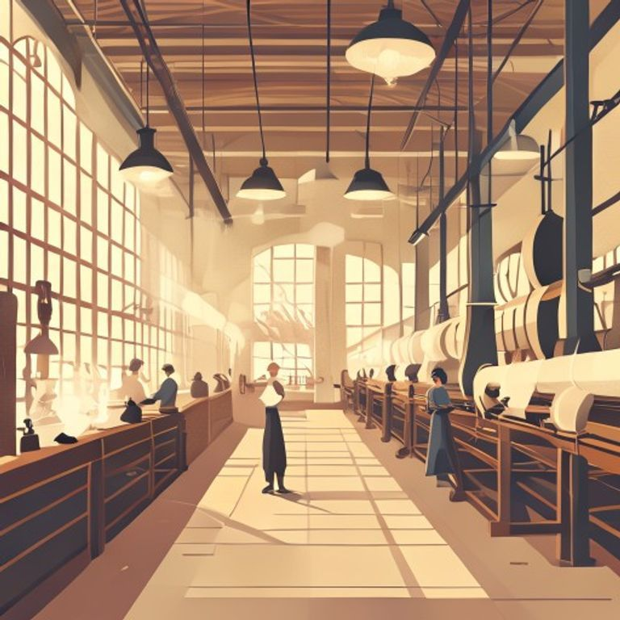
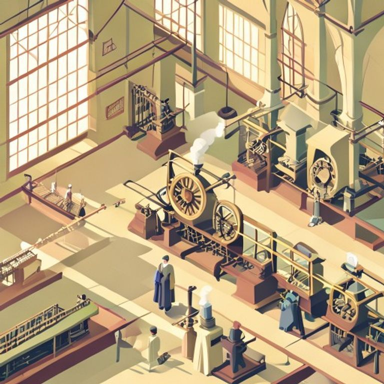
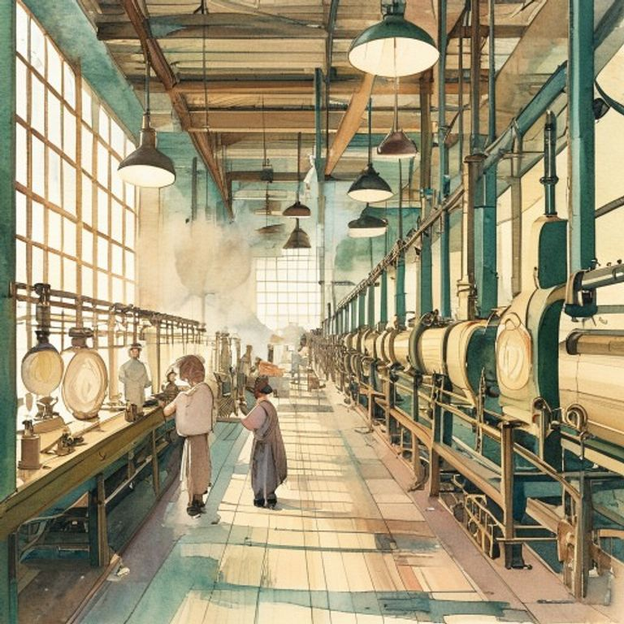
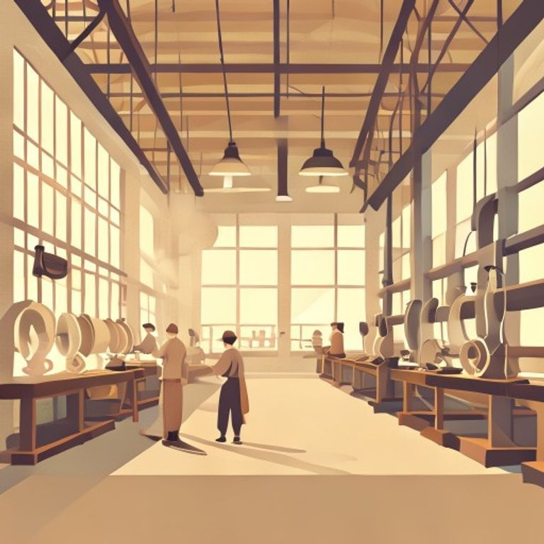
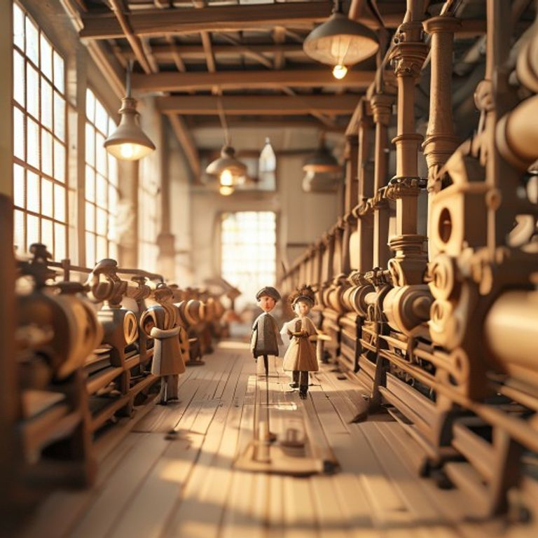
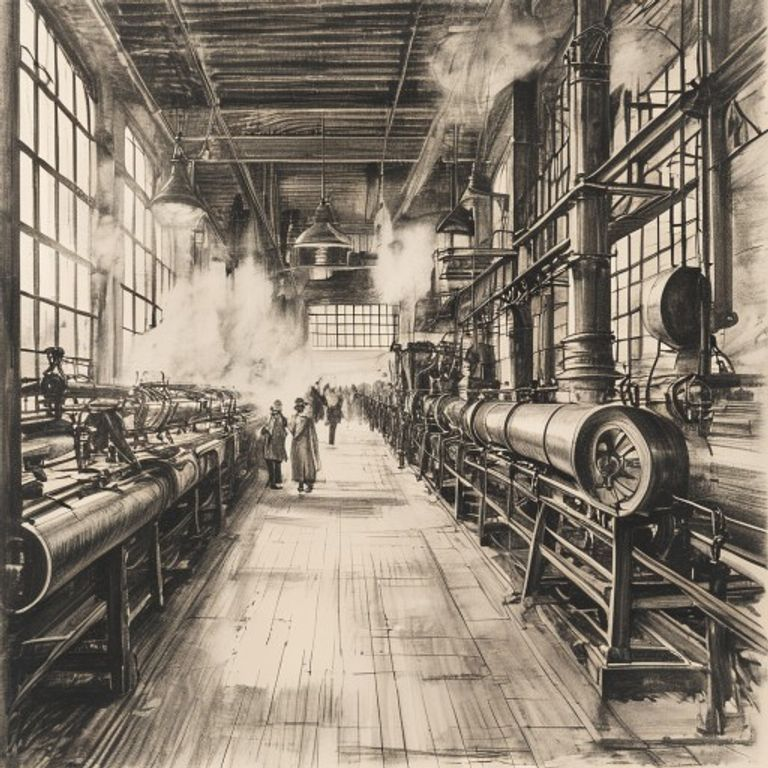
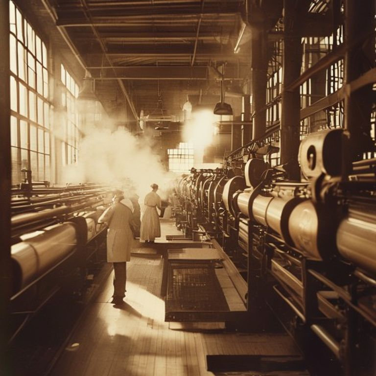

Revolucio Industrial - 7 estils FLUX-schnell
Subjecte comu (mateix per a tots, seed=42):
the interior of a 19th century textile factory, rows of mechanical looms powered by steam, a few workers in simple period clothing tending the machines, warm light filtering through tall windows, waist-up framing, three-quarter view
Vectorial editorial pla

01_vectorial_editorial
Isometric infografic

02_isometric_infografic
Aquarel.la storybook

03_aquarela_storybook
Icona minimalista

04_icona_minimalista
Claymation plastilina

05_claymation_plastilina
Escala grisos - carbonet

06_escala_grisos_carbonet
Fotografia documental

07_fotografia_documental
Qwen-Image infografia
(pendent, quota esgotada)